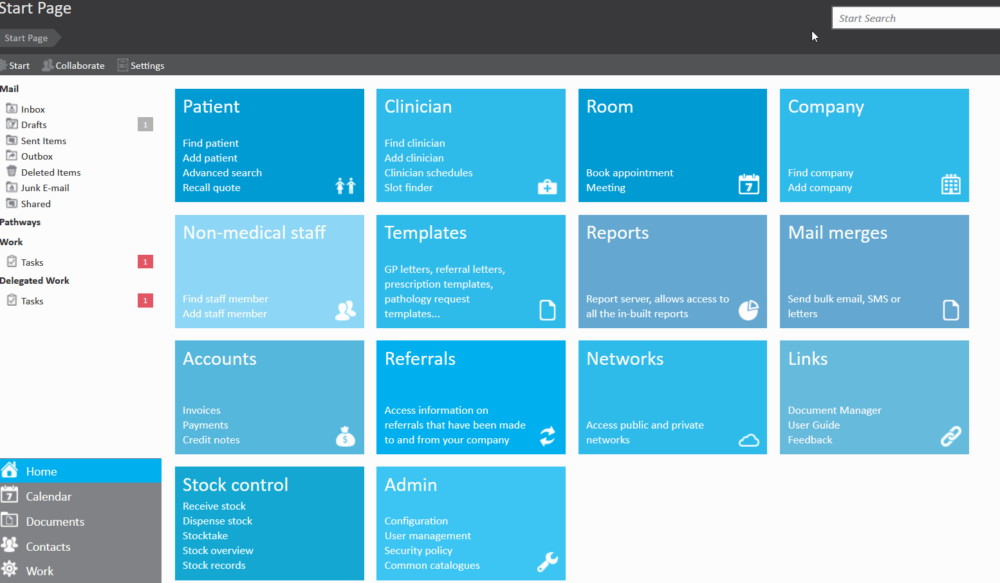
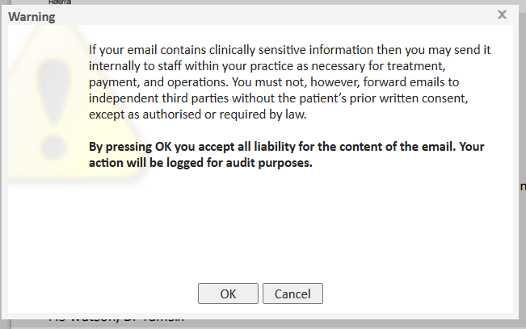
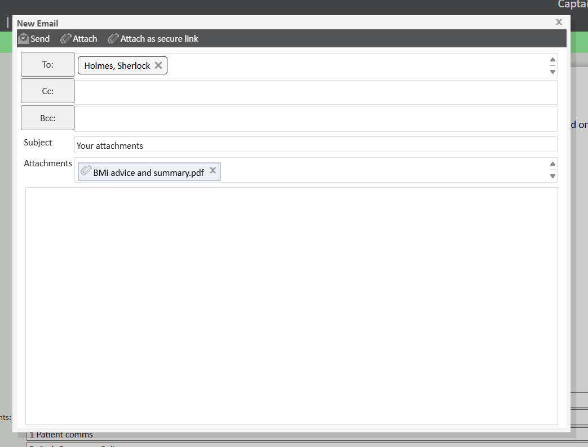

Meddbase allows users to send and receive emails without having to leave the application. This helps to save time and ensure accuracy of information shared. The email function allows for documents to be attached, and even offers the option to send those documents securely using a validation code sent to the recipients mobile number, keeping security at the heart of what we do.
This article explains the different ways to email documents.
Should you ever need to communicate documents to others by email, this can be achieved in one of three ways. Begin by opening the document you wish to email and click the ‘Email’ button on the top toolbar.

Selecting any of these options will present the following dialogue box, to which if you accept all Liability. you will need to click OK to accept liability and proceed with emailing the document.

Choosing any of these three options will bring up the email dialogue where you may fill in the To, Cc, Bcc, Subject and Body for the email. Any users of the system will appear automatically when you type their first or last name. You may also click the ‘To’, ‘Cc’ or ‘Bcc’ fields to select from your contacts and friends, or the patient’s contacts, collaborators, employer contacts, insurer contacts etc if listed.
You may also attach further files to emails by clicking the ‘Attach’ button on the top toolbar.
